The savanna biome is a tropical grassland with warm temperatures year-round and seasonal rainfall in the summer. It is characterized by grasses and dispersed trees that do not form a closed canopy, allowing sunlight to reach the ground. The African savanna contains a diverse community of organisms that interact to form a complex food web.
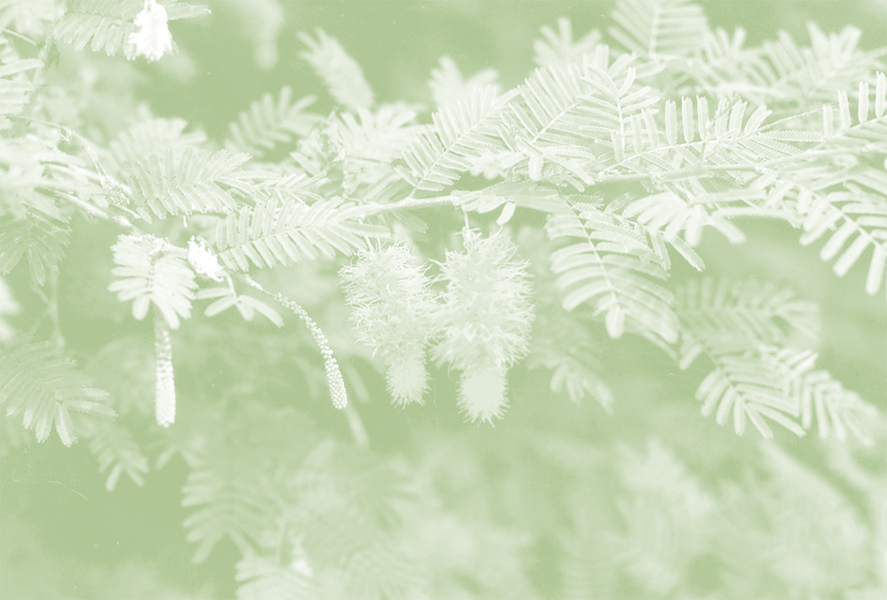
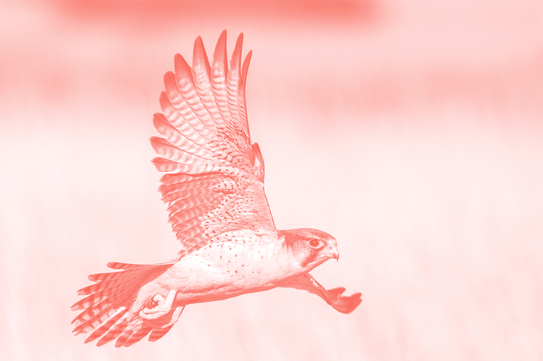
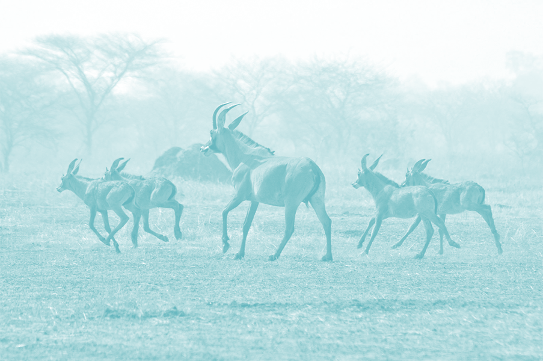
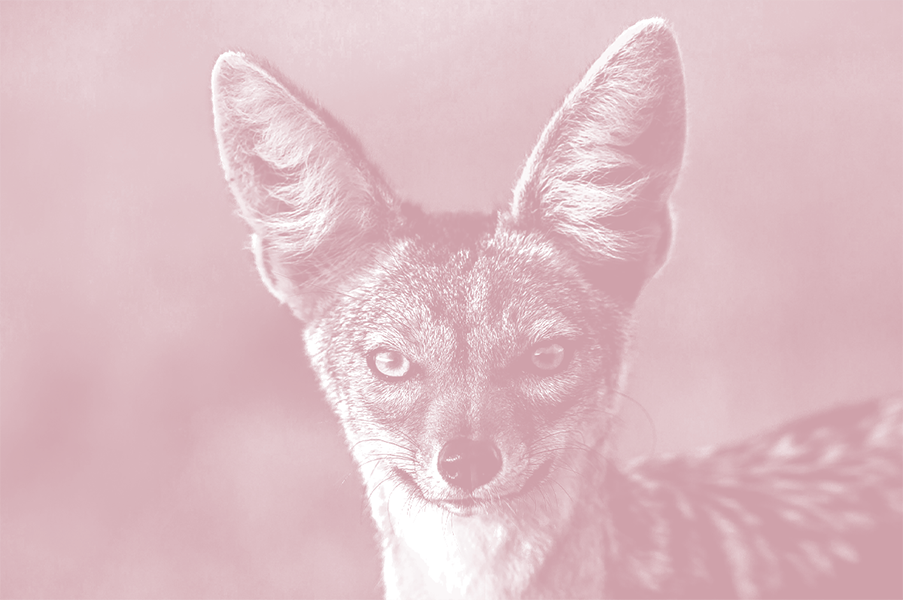
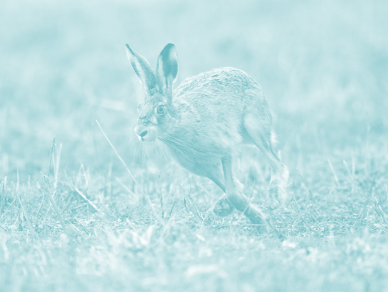
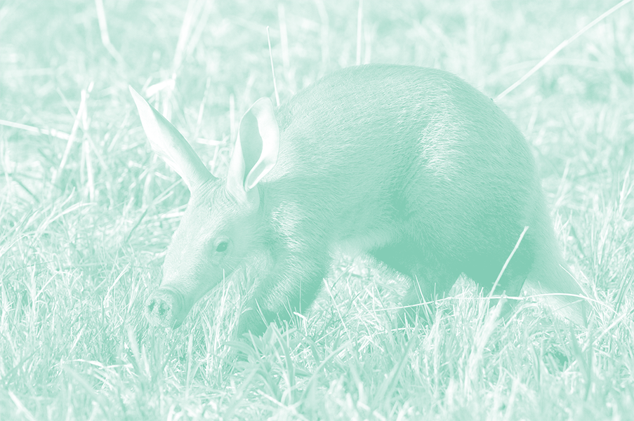

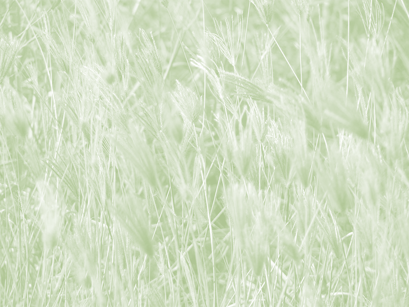
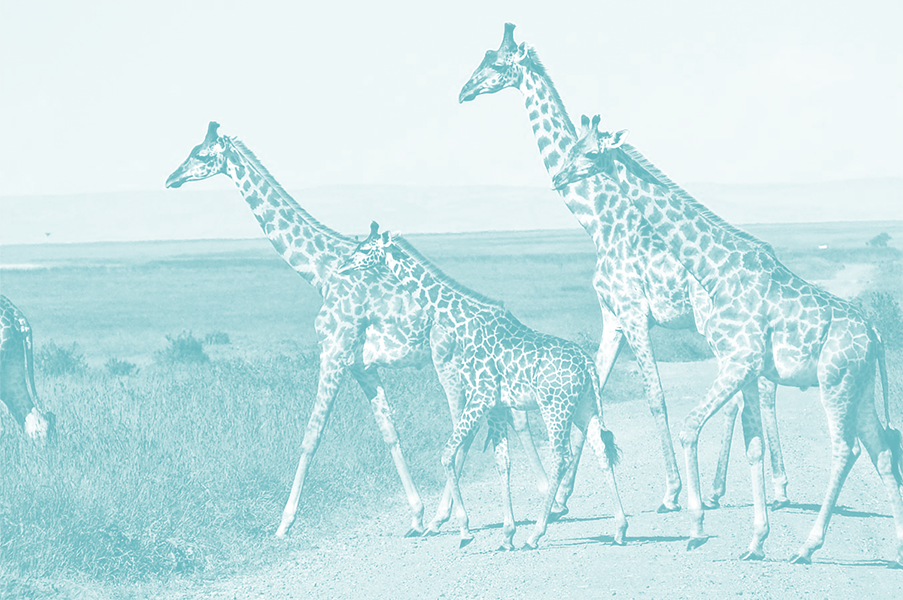
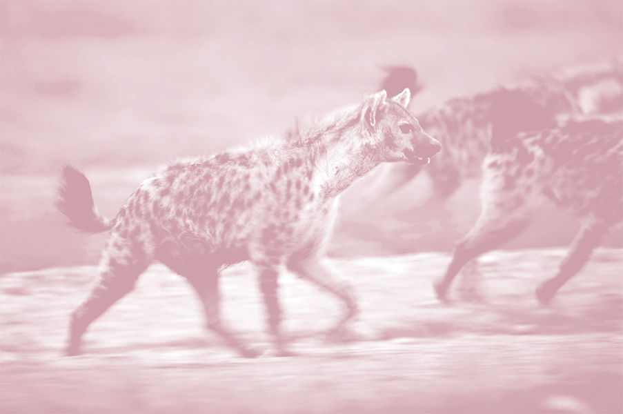
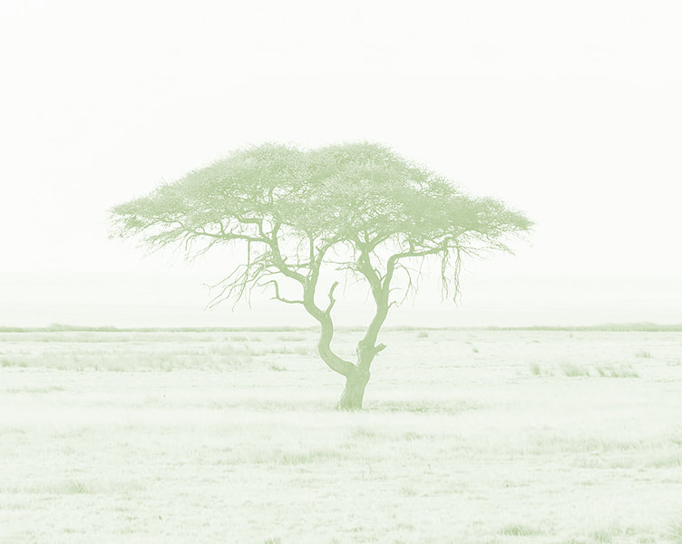
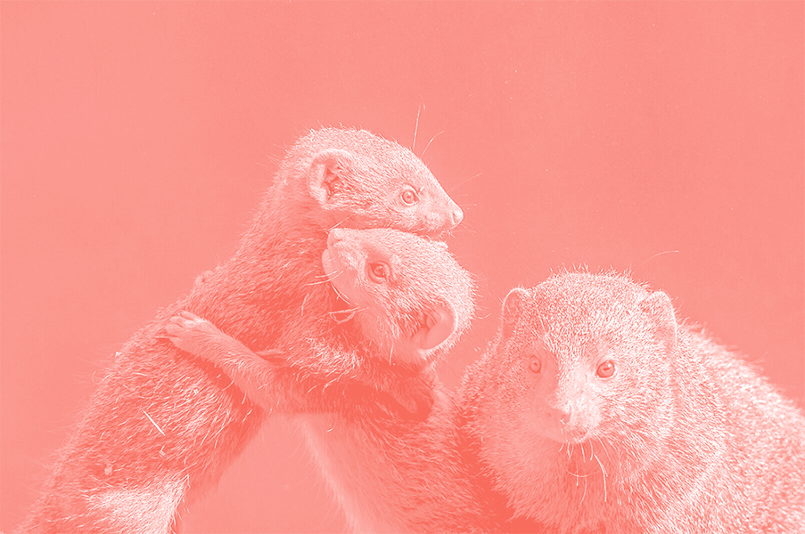
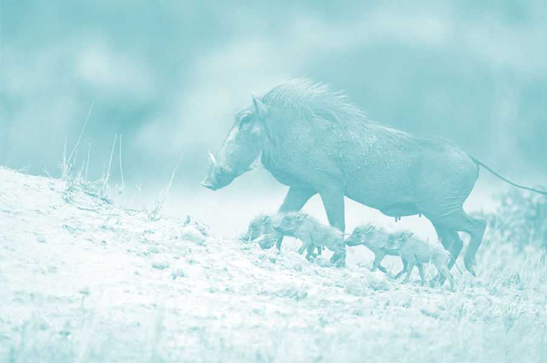
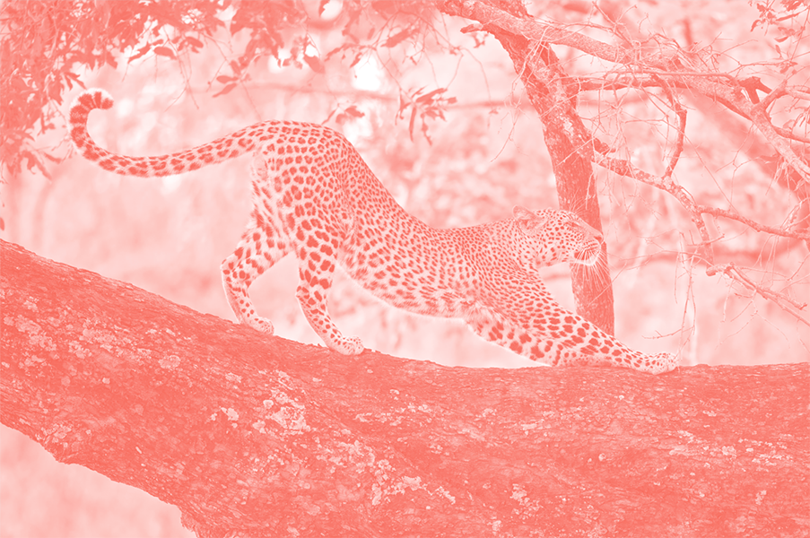
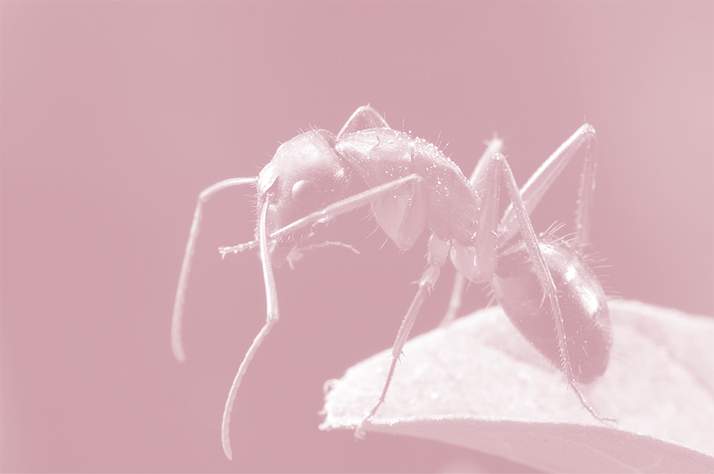
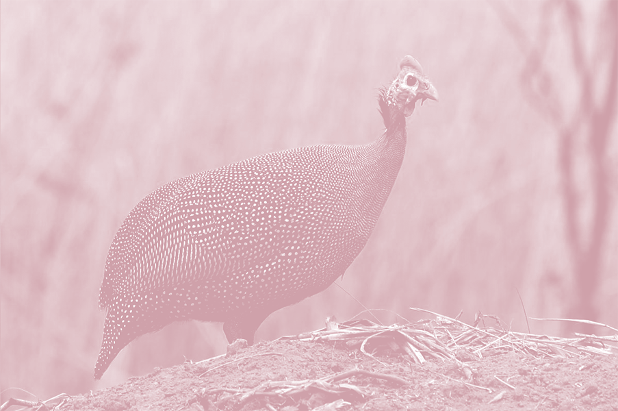
A community is a group of organisms interacting in the same environment. A food web shows how these organisms are linked in order of the food they eat, from producers to consumers, prey to predators, and scavengers to decomposers. The arrows in a food web represent the flow of energy and matter between organisms. In most ecosystems, organisms can get food and energy from many sources, and may have many predators.
- Producers
- Herbivores
- Predators
- Insectivores
- Omnivores
- Scavengers
- Decomposers